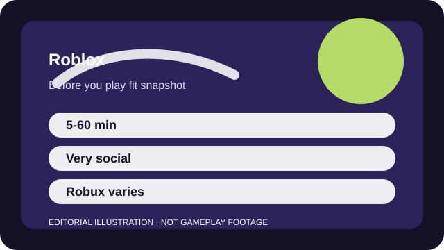

BEFORE YOU PLAY
What this page is and is not
This is a sourced editorial fit profile. It is designed to help with a yes-or-no play decision, and it does not claim a scored hands-on review.
The core question is not whether Roblox is a good single game. It is whether you want a platform full of uneven but accessible experiments. That makes safety setup and curation part of the decision, not a footnote.
The first-session loop to judge is simple: Browse or revisit user-created experiences, play a few short sessions, and decide which spaces deserve repeat visits.
Progress depends on the specific experience you choose rather than one unified Roblox-wide progression loop.

FIT SNAPSHOT
Roblox at a glance
| Genre | User-created game platform |
|---|---|
| Platforms | PC, PlayStation, Xbox, Mobile, VR |
| Business model | Free platform access with Robux purchases and experience-specific monetization. |
| Typical session | 5-60 minutes depending on the specific experience and group plan. |
| Play style | social variety platform |
| Learning barrier | The controls can be easy, but account safety, social settings, and smart experience selection matter more than with a single curated game. |
| Social shape | Roblox is highly social by default, which makes privacy and communication settings part of the fit rather than a side issue. |
WHO IT FITS
Best fit, likely friction, and the social reality
families, friend groups, or variety seekers who want many low-friction experiences on familiar devices
players who want one curated game, strong discovery filtering, or zero interest in user-generated spaces
Roblox is highly social by default, which makes privacy and communication settings part of the fit rather than a side issue.
Progress depends on the specific experience you choose rather than one unified Roblox-wide progression loop.
FIRST SESSION PLAN
How to test the fit in one evening
- Configure privacy, chat, and purchase settings before you browse widely.
- Save two or three trusted experiences instead of drifting through the whole discovery feed.
- Play with known friends or a family member first so the social tools are easier to read.
- Treat every in-experience store as optional until you understand what it actually changes.
Use the first session to answer these fit questions instead of judging rank, win rate, or store value immediately.
- Do you want variety more than consistency?
- Are you comfortable curating what gets played instead of trusting discovery systems completely?
- Do in-experience purchases need hard boundaries in your household?
TIME, COST, AND COMMITMENT
What you are really signing up for
| Session budget | 5-60 minutes depending on the specific experience and group plan. |
|---|---|
| Social demand | Roblox is highly social by default, which makes privacy and communication settings part of the fit rather than a side issue. |
| Progression shape | Progress depends on the specific experience you choose rather than one unified Roblox-wide progression loop. |
| Spending pressure | Entry is free, but Robux spending and experience-specific monetization vary widely enough that boundaries matter early. |
You can dip in for minutes at a time, but account controls and spending boundaries should be handled before browsing freely.
Entry is free, but Robux spending and experience-specific monetization vary widely enough that boundaries matter early.
SOURCES AND LIMITS
What was checked, and what can change
- Popular experiences and discovery surfaces shift constantly.
- Platform-level safety tools and communication defaults can change by device.
- Individual experiences can alter their own monetization and moderation rules at any time.
This profile uses official game pages and defensible general product knowledge to frame the player fit. It does not claim live testing across every platform, accessibility need, or current event rotation.